AI 每日新聞彙整
全部主題
其他
2 家媒體報導spacexregulationfcc
SpaceX百萬衛星只是起點 太空資料中心考驗才開始
美國聯邦通訊委員會（FCC）最新核准SpaceX部署百萬顆太空資料中心衛星，讓AI基礎設施從地面延伸至太空。不過，監管許可不等於商業模式已然成熟，從發射成本、晶片供應、散熱技術到資料傳輸，太空資料中心仍有多項重大工程與經濟障礙，短期或仍僅停留在技術驗證及示範...
- DIGITIMES SpaceX百萬衛星只是起點 太空資料中心考驗才開始
- TechOrange 科技報橘 FCC 首度放行太空資料中心：SpaceX 獲准部署百萬顆低軌 AI 衛星，規模達目前全球衛星總數近 60 倍
2 家媒體報導amdllama.cppmeta
AMD-specific fork of llama.cpp
Article URL: https://devnull.land/amd-specific-llama-cpp Comments URL: https://news.ycombinator.com/item?id=50657265 Points: 265 # Comments: 64
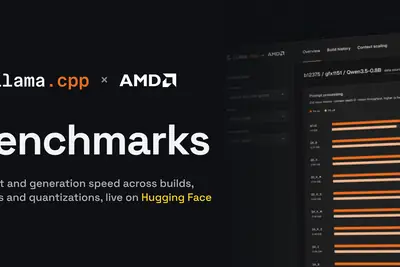
- Hacker News (100+) AMD-specific fork of llama.cpp
- Hugging Face Introducing the llama.cpp benchmark dashboard for AMD Ryzen and Radeon
digitimestoday
DIGITIMES Today：NVIDIA黃仁勳復職爭議未解？| 穎崴AI測試介面仍供不應求 | 中國晶圓廠大搶成熟製程設備
早安，這裡是編輯中心。
4.0silicongdp
Silicon 4.0系統微縮時代來了 盧超群：AI改寫半導體經濟法則
陽明交通大學頒授名譽博士學位予鈺創科技董事長暨陽明交大講座教授盧超群，盧超群在專題演講中指出，人工智慧（AI）全面滲透各行各業，對台灣GDP貢獻超過兩位數，而全球半導體市場在2026年底產值預計直接翻倍至1.6兆美元，並正式邁向強調系統級整合與光電共封裝的Si...
- DIGITIMES Silicon 4.0系統微縮時代來了 盧超群：AI改寫半導體經濟法則
流量不再是唯一戰場 AI重塑消費決策與品牌競爭
生成式AI與AI搜尋快速改變消費者取得資訊及做出購買決策的方式，過去以搜尋引擎、網站流量及廣告曝光為核心的數位行銷模式，正逐步變成由AI介入的新型態消費旅程。業界觀察，企業掌握流量時代已過去，未來消費市場更加激烈，反而更加關注誰能透過AI擴大影響力來吸引廣大消...
- DIGITIMES 流量不再是唯一戰場 AI重塑消費決策與品牌競爭
robotjetsonsamsung
南韓政府盼開發NVIDIA Jetson替代品 三星不敢輕易投入？
南韓政府積極推動機器人國產化，傳向三星電子（Samsung Electronics）提出開發NVIDIA Jetson Thor替代晶片的要求。據悉三星考量市場需求與投資效益，暫時不願冒然投入。分析認為，南韓要實現高效能機器人晶片國產化，恐怕還要相當長的時間。
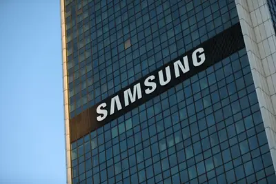
- DIGITIMES 南韓政府盼開發NVIDIA Jetson替代品 三星不敢輕易投入？
fundingsoftbanksbg
AI投資變現前景未明 軟銀債務、估值與再融資壓力齊升
軟銀集團（SoftBank Group；SBG）的信用風險，約4年來首度升破500個基點。隨著該公司持續大舉投資人工智慧（AI），未來融資成本預料將進一步上升。
- DIGITIMES AI投資變現前景未明 軟銀債務、估值與再融資壓力齊升
regulationdonaldtrump
川普保住黃仁勳 中美晶片戰方興未艾「獵巫」再將至？
NVIDIA執行長黃仁勳涉緋聞請辭不到兩週，在美國總統川普（Donald Trump）協助下重新復職，惟北京未掉以輕心，中國官媒火速示警，直言美方惡意挑撥與下一波政治獵巫不會因此消失，官方更在反制禁令與維繫休戰之間權衡。
- DIGITIMES 川普保住黃仁勳 中美晶片戰方興未艾「獵巫」再將至？
datacenterfundingcompute
美國晶片新規收緊 東南亞銀行嚴查資料中心算力流向
美國最新晶片出口管制出爐，防堵中國業者藉由東南亞的資料中心存取高階算力。銀行為控管風險，開始重新審視資料中心客戶的融資條件。
- DIGITIMES 美國晶片新規收緊 東南亞銀行嚴查資料中心算力流向
2027fundinghpc
AI測試介面持續供不應求 穎崴喊2027產能倍增仍難滿足
測試介面廠穎崴表示，受惠於全球半導體對AI、HPC及特用晶片（ASIC）的強勁需求，2026年前3季累計營收提前突破新台幣百億元大關，不過受限於產能供不應求，亦導致公司錯失部分訂單，即使2027年啟動新一輪擴產計畫，仍難以完全滿足市場需求。<...
- DIGITIMES AI測試介面持續供不應求 穎崴喊2027產能倍增仍難滿足
compute
全球 AI 算力市場兩樣情，中國高價搶卡，美國需求與貸款逐步降溫
全球 AI 算力市場正出現荒誕的兩極割裂。在中國國內，一台 8 卡輝達 B300 伺服器黑市報價已炒至人民幣 […]
- 科技新報 TechNews 全球 AI 算力市場兩樣情，中國高價搶卡，美國需求與貸款逐步降溫
layoffverticalslice
消息称育碧正大力推动将生成式 AI 深度融入游戏开发流程，项目若未引入 AI 需申报原因
IT之家 11 月 26 日消息，据外媒 Vertical Slice 报道，育碧正在大力推动生成式 AI 深度融入游戏开发流程，如今公司团队在提交新游戏项目提案时，必须说明生成式 AI 能够如何帮助开发游戏，如果团队不打算使用生成式 AI，则需要向公司高层明确解释原因。 多名员工透露， 如果某个游戏项目提案没有涉及生成式 AI，同时给予高管的理由不能够让人信服，就很难获得批准 。 还有匿名员工表示：“公司告诉我们，使用 AI 能够提高小型、精简且灵活的团队提交项目提案的速度。管理层希望团队能够快速推进、反复迭代，并及时放弃不合适的项目，从而筛选出真正有
621.40ssd
用户反馈英伟达 621.40 驱动“按下葫芦浮起瓢”：修复 SSD 写入后又出现黑屏
IT之家 11 月 27 日消息，科技媒体 TechPowerUp 昨日（11 月 26 日）发布博文，报道称英伟达 GeForce 621.40 WHQL 驱动（11 月 24 日推送）在修复固态硬盘异常写入问题后，却又引入新的 Bug， 部分用户又发现，安装该版本后出现了黑屏、显示器无信号以及屏幕闪烁等新故障。 根据英伟达官方反馈论坛的用户回帖，一名 RTX 5060 显卡用户表示，安装 621.40 驱动后，显示器立即失去信号，且此后每次开机都会出现同样情况。该用户最终不得不将驱动回滚至 621.24 版本，才恢复正常显示。 另一名使用 RTX 5
anthropic
Anthropic 平台工程负责人莱斯：AI 改变工程师晋升标准，不再只看项目耗时
IT之家 11 月 27 日消息，在 Anthropic，AI 正在改变软件工程师的晋升标准。据《商业内幕》今天（27 日）报道，Anthropic 平台工程负责人凯特琳 · 莱斯近期谈到了 AI 对工程师职业发展的影响。她指出，AI 普及后，单纯以 项目完成时间 来判断工程师是否具备晋升条件，已经没有过去那么大的参考价值。 过去需要数年才能完成的工作，现在几个月就能完成。相比项目耗时，她的团队更看重 降低系统延迟、避免事故等 实际成果。“归根结底，还是看实际影响。” 随着 AI 智能体加速软件开发，工程师创造价值的方式也在发生变化。莱斯认为，工作的重点
g-syncoledvrr
英伟达 G-SYNC 新工具上线：解决约 60 FPS 时 OLED 屏幕亮度闪烁问题
IT之家 11 月 27 日消息，据 Wccftech 今日报道，NVIDIA Profile Inspector 开发者 Orbmu2k 发布了一款名为 NVIDIA G-SYNC Tweaks 的免费开源工具。 这款工具可用于调整英伟达显卡驱动中未公开的 G-SYNC、可变刷新率（VRR）相关参数，重点解决部分高刷显示器在 60 FPS 时提前触发低帧率补偿（LFC），导致 OLED 屏幕亮度闪烁以及其他显示器出现卡顿的问题。 可变刷新率技术能够让显示器刷新率与 GPU 实际输出帧率动态同步，从而减少画面撕裂和卡顿。当游戏帧率低于显示器支持的 VRR
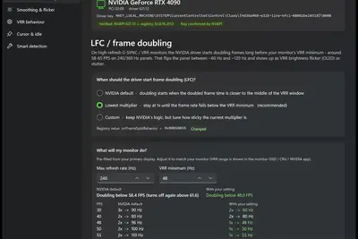
cbsnewsnvidia
CBS：中資美企獲輝達高階晶片，出口管制漏洞浮現
美國哥倫比亞廣播公司新聞網（CBS News）調查發現，輝達（Nvidia）正向至少兩家總部設在美國、實際由中 […]
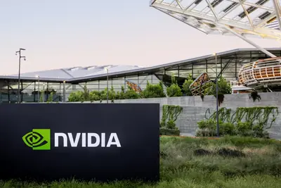
- 科技新報 TechNews 揭密輝達與中資控股背景美企往來，民主黨議員要展開調查
- 科技新報 TechNews CBS：中資美企獲輝達高階晶片，出口管制漏洞浮現
electronica
車用晶片廠接連示警 AI 需求排擠持續，自有產能與長期合約成供貨關鍵
ST 執行長於 2026 年 11 月 9 日德國慕尼黑電子展（Electronica）展前論壇指出，部分晶圓 […]
- 科技新報 TechNews 車用晶片廠接連示警 AI 需求排擠持續，自有產能與長期合約成供貨關鍵
astrasolgpt-6.2
GPT-6.2 额度突然不耐用了？OpenAI 承认计费出错，修复后 Astra 消耗速度加快 40%、Sol 加快 25%
IT之家 11 月 27 日消息，OpenAI 已紧急修复 GPT-6.2 上线初期的一项计费错误 —— 此前该问题导致大多数用户使用 GPT-6.2 Astra 和 Sol 时，消耗的套餐额度按折扣价进行了计算。 OpenAI Codex 与 ChatGPT 负责人 Thibault Sottiaux（Tibo）表示，修复后，用户完成相同工作量时将消耗更多额度：与上周相比，Astra 用户触及使用上限的速度将加快 40%，Sol 用户则将加快 25%。 Sottiaux 同时表示，尽管修复后两款模型的额度消耗速度有所增加，但与上一代 GPT-6 Ast
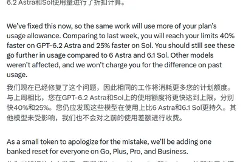
sap
彭博社：欧洲市值最高的软件公司 SAP 计划裁员超 1 万人，约占总员工 9%
IT之家 11 月 27 日消息， 彭博社昨日（11 月 26 日）发布博文，报道称德国软件巨头思爱普（SAP）正考虑在一轮以人工智能为核心的重组中，裁减至少 1 万个工作岗位。 该规模约相当于 SAP 全球员工总数的 9%，最终裁员人数尚未确定，后续或因公司与劳工代表的协商结果而有所调整。 IT之家查询公开资料，思爱普成立于 1972 年，总部位于德国沃尔多夫，是全球企业应用软件的重要供应商，是“欧洲市值最高的软件公司”。其核心产品帮助企业完成财务、供应链、采购、人力资源、销售和运营等流程的数字化管理。 知情人士称，SAP 管理层正推动软件业务向 AI
alibababytedancemicrosoft
【科技早餐】美國 AI 晶片管制衝擊亞洲融資！66 億美元資料中心貸款案傳延宕
【科技早餐】今天精選 6 則國內外重要科技新聞。 ＊美國 AI 晶片管制衝擊亞洲融資！66 億美元資料中心貸款案傳延宕 《Bloomberg》11 月 25 日報導，美國擴大 AI 晶片出口管制後，亞洲銀行正重新審查涉及字節跳動、阿里巴巴與騰訊等中國科技企業的資料中心融資案。美國私募基金貝恩資本（Bain Capital）旗下的 Bridge Data Centres 正尋求將貸款規模擴大至 66 億美元，旗下馬來西亞資料中心的客戶包括字節跳動。據知情人士透露，部分放款機構已暫緩推進貸款，進一步進行盡職調查，尚未確認融資案取消。 根據《Bloomberg
- TechOrange 科技報橘 【科技早餐】美國 AI 晶片管制衝擊亞洲融資！66 億美元資料中心貸款案傳延宕
pauseshipmentshits
Nvidia hits pause on chip shipments to Southeast Asia
Nvidia has told manufacturing partners to pause server shipments to Malaysia, Singapore, Thailand and Indonesia as the U.S. tightens its push to keep AI chips out of China.
- TechCrunch AI Nvidia hits pause on chip shipments to Southeast Asia
neongeminigoogle
Google打響AI價格戰！Gemini 4 Neon便宜25%、效能直逼頂尖模型，市場競爭再升溫
Gemini 4 Neon定價比Claude Opus 5.5低25%，Google以價格戰搶企業與開發者市場。

grandtheftauto
Grand Theft Auto VI proves why efficiency isn’t a virtue
On the same day that Anthropic entered the public market, a painstakingly human video game became one of most successful entertainment launches of all time.
- TechCrunch AI Grand Theft Auto VI proves why efficiency isn’t a virtue
瑞士发生五起 AI 智能体网络攻击，电力供水通信系统遭入侵
IT之家 11 月 26 日消息，据路透社报道，瑞士联邦网络安全局（BACS）周四通报，过去几天瑞士发生五起网络攻击，攻击者使用 AI 智能体针对企业以及关键基础设施运营方发起入侵。 IT之家注意到，该局在公告中表示，五起攻击里有四起攻击得手，相关系统遭到入侵。遭到攻击的对象包含三家关键基础设施运营主体，据瑞士公共广播公司 SRF 介绍，它们分别是电力、供水以及通信服务供应商。 瑞士联邦网络安全局没有透露攻击的幕后主体信息。机构建议相关企业落实防护手段，其中包括定期开展网络安全检测。
jackdespainzhou
Quoting Jack Despain Zhou
Among the many already existing effects of AI has been a great de-individualization. I open a YouTube video, and I hear Claude. I sit in a conference presentation, and I hear Claude. I open my email inbox, and I find pitches and articles from ostensibly serious people with ostens
- Simon Willison Quoting Jack Despain Zhou
metaofflimits
因隐私问题，荷兰多个组织要求法院叫停 Meta 智能眼镜销售
IT之家 11 月 26 日消息，据路透社报道，荷兰多家消费者与数字权益组织于周四向法院提出申请，要求叫停 Meta 旗下 AI 智能眼镜在荷兰的销售。原告方主张，这款眼镜允许佩戴者在他人不知情的情况下进行拍摄，违反了欧洲隐私法规。 这起民事诉讼仅针对荷兰市场，但阿姆斯特丹地区法院的简易判决有可能形成判例。目前，这类智能眼镜已经在全球范围内引发公众强烈反对，不少场所出台禁令，监管机构也陆续发出警示。 原告包括荷兰最大的消费者协会消费者联盟（Consumentenbond）、以及致力于打击网络性侵害的组织 Offlimits。他们表示，这款由 Meta 和
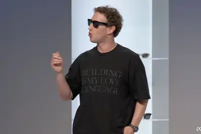
natureoridtptencent
腾讯用 AI 挑战药物研发领域前沿难题：成果登 Nature，在减重降糖、肿瘤免疫方向完成验证
IT之家 11 月 26 日消息，腾讯今日宣布，11 月 25 日，腾讯生命科学实验室的一项 AI for Science 研究成果，正式以第一单位登上《Nature》主刊。 据介绍， 腾讯用 AI 挑战了药物研发领域的一个前沿难题：高活性双靶点治疗性多肽的从头设计 。通俗来说，就是不依赖已有的分子模板，从零开始设计一把能打开两把锁的“钥匙”，为复杂疾病的治疗提供新的可能。 围绕这个问题，团队经过长期探索，研发了 AI 平台 ORIDTP，将扩散生成模型、双目标强化学习、柔性多肽亲和力建模与生物学实验相结合，跑通了一套“计算设计 — 实验验证 — 反馈优
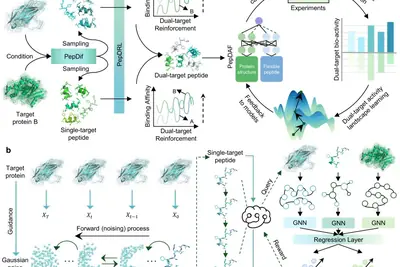
compute
华为：乾崑智驾和星驰辅助驾驶二者在具体功能和体验方面会有所差异
IT之家 11 月 26 日消息，在今晚的 2026 华为乾崑生态大会上， 华为智能汽车解决方案 BU CEO 靳玉志正式发布了华为星驰辅助驾驶系统 。 IT之家从华为官方了解到， 星驰辅助驾驶与乾崑智驾技术同源、资源共享 ：将采用技术同源的 WEWA（世界引擎 + 世界行为模型）架构，共享乾崑智驾的云端算力和数据资源，此外还将遵从同一套研发流程与车规级质量管理体系。 华为表示， 星驰辅助驾驶与乾崑智驾二者在具体功能和体验方面会有所差异 ，但安全算法、稳定性和可靠性不变。根据华为官方定义：乾崑智驾 ADS 历经 5 代演进，未来将主要面向自动驾驶；星驰专
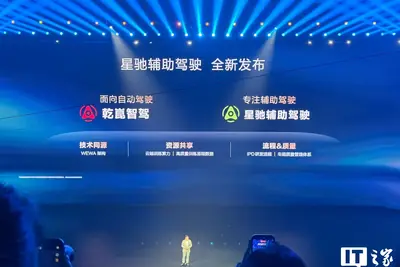
sk-hynixsamsung
消息称马斯克为采购存储芯片曾主动提出为三星工厂提供融资担保，被李在镕拒绝
IT之家 11 月 26 日消息，据华尔街日报于当地时间 11 月 25 日报道，资本集团（Capital Group）投资组合经理卡尔 · 卡瓦贾（Carl Kawaja）回忆了他与马斯克就特斯拉存储芯片问题进行的一次交谈。 卡瓦贾称，马斯克表示他曾向三星提出长期芯片（IT之家注：根据原报道上下文，此处指存储芯片）采购承诺，结果三星会长李在镕却回答说，其他所有人都在向他提供同样的条件，你还能拿出什么别的筹码？ 而当马斯克随后提出为三星的新芯片工厂提供融资担保时， 李在镕的回答依然是：其他所有人都在向他提供同样的条件，你还能拿出什么别的筹码？ 资本集团和
2020datacenter
黃仁勳下一步要賺什麼錢？輝達瞄準兆美元AI工廠市場，關鍵布局早在2020年
輝達稱霸AI晶片市場，黃仁勳將瞄準兆美元AI工廠商機！從收購邁倫科技到打造超級資料中心，解析輝達如何建立競爭優勢。
geforceperformanceultimate
英伟达 GeForce NOW 黑五促销：半年会员七折，12 款游戏入库
IT之家 11 月 26 日消息，英伟达于当地时间 11 月 26 日发布新一期 GFN Thursday 内容，公布黑色星期五会员优惠、游戏内奖励及新游戏入库信息。 本次活动中，Performance 和 Ultimate 两档会员的首个 6 个月订阅期可享 7 折优惠，《战争雷霆》上线 NVIDIA DLSS 5 画质升级，所有档位会员均可领取 Ready for Battle Pack 礼包，另有 12 款游戏加入云游戏库。 据英伟达官方介绍，黑色星期五促销活动将持续至 11 月 30 日（太平洋时间），适用于新开通会员以及符合条件的会员升级，优惠
让渐冻症患者“开口说话”，我国首例无线侵入式汉语脑机接口临床试验成功开展
IT之家 11 月 26 日消息，复旦大学今日发文，介绍了脑机接口的里程碑新突破：成功开展了 我国首例无线侵入式汉语脑机接口临床试验 ，让渐冻症患者实现了“靠意念就能交流”。 身患渐冻症的李阿姨无法顺畅发声，仅仅轻轻动一动嘴唇，屏幕立刻浮现文字，设备随后传出带着她本人音色的语音。 我重新点燃了生活的希望，真心期盼这项研究早日成熟，帮到更多有需要的病友。 这一幕，来自复旦大学附属华山医院 / 现代语言学研究院路俊锋、毛颖、张梦翰团队，联合中国科学院脑科学与智能技术卓越创新中心赵郑拓、阶梯医疗李雪及上海科技大学李远宁等团队在“脑科学与类脑研究”国家科技重大专
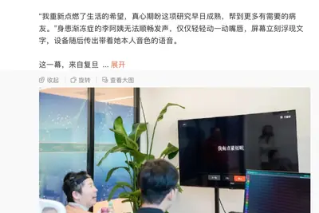
workchatchatgpt
OpenAI開始合併ChatGPT的Chat與Work介面，預定12月擴大部署共用配額
OpenAI於11月宣布將合併對話（Chat）、Work及Codex的token用量配額的計畫。在ChatGPT Work與Codex本月稍早整合用量配額後，OpenAI官方公告開始針對少數Pro用戶合併Chat和Work，預定12月擴大部署共用配額機制。
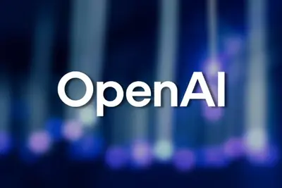
headphoneszdnetbest
ZDNET’s best headphones of 2026: These two pairs left us impressed
We tested dozens of Bluetooth headphones in 2026, but two stood out. Here’s our top picks.
testingrefusedshare
Meta Refused to Share Muse for Testing, UK Financial Watchdog Complains
The FCA warned against “another force of attack” from agents after the company declined a request to work on joint testing ahead of rolling out its personal agent in the UK on Tuesday.
windowsmacapp
Claude新功能可將物件變成獨立Mac、Windows App
Anthropic宣布今天開始，以beta版為Mac和Windows版Claude App部署一項功能，可輕鬆將Claude生成的物件轉成桌機版應用程式，擁有圖示和視窗，還能分享他人。
stateagstrying
42 state AGs are trying to stop Character.AI from selling users’ chats
A coalition of 42 state attorneys general is trying to prevent Character.AI from selling off user data as it navigates Chapter 11 bankruptcy proceedings. In a deluge of nearly identical press releases, the various AGs accuse the company of planning to auction off "the private cha
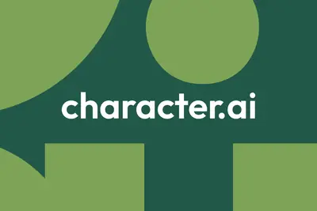
a16z1.1xai
AI 代理怎麼挑商品？a16z 實測逾 1.1 萬次：特定需求能翻轉首選，遇到登入牆就卡關
創投公司 Andreessen Horowitz（a16z）近日與販售 AI 代理可見度服務的新創 The Prompting Company 合作，以 1,270 個提示詞，對 xAI 的 Grok Bot、Meta 的 Muse、新創 Instinct 與 OpenAI 的 Dots 四款消費者 AI 代理（AI agent）完成 11,307 次測試，觀察代理如何挑選商品與軟體，並歸納出企業爭取代理青睞的五項做法。 a16z 認為，代理將愈來愈常影響人們購買哪些產品、使用哪些 App，以及把錢與 token 花在哪裡，幾乎每家企業都會想進入這個新的
- TechOrange 科技報橘 AI 代理怎麼挑商品？a16z 實測逾 1.1 萬次：特定需求能翻轉首選，遇到登入牆就卡關
AI 看指紋就能判斷血型？逾 10 篇論文遭質疑，資料集根本沒有血型資訊
多篇聲稱能透過指紋判斷血型的人工智慧研究，近日因資料真實性遭到嚴重質疑而引發學界關注。根據最新消息，愛思唯爾（ […]
- 科技新報 TechNews AI 看指紋就能判斷血型？逾 10 篇論文遭質疑，資料集根本沒有血型資訊
codecodingopensource
T3 Code 是什麼？開源 coding agent 控制介面，讓 Claude Code 與 Codex 在電腦與手機間接力
T3 Code 是開源的 coding agent 控制介面，在用戶自己的電腦上執行 Claude Code、Codex 等代理，並提供桌面、網頁、iOS 與 Android 版本。用戶可在電腦開啟對話，再用手機接手審核與下指令，採 MIT 授權且不轉賣模型額度。
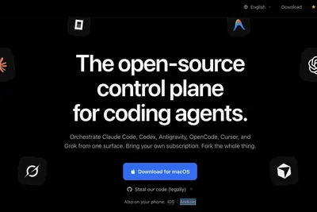